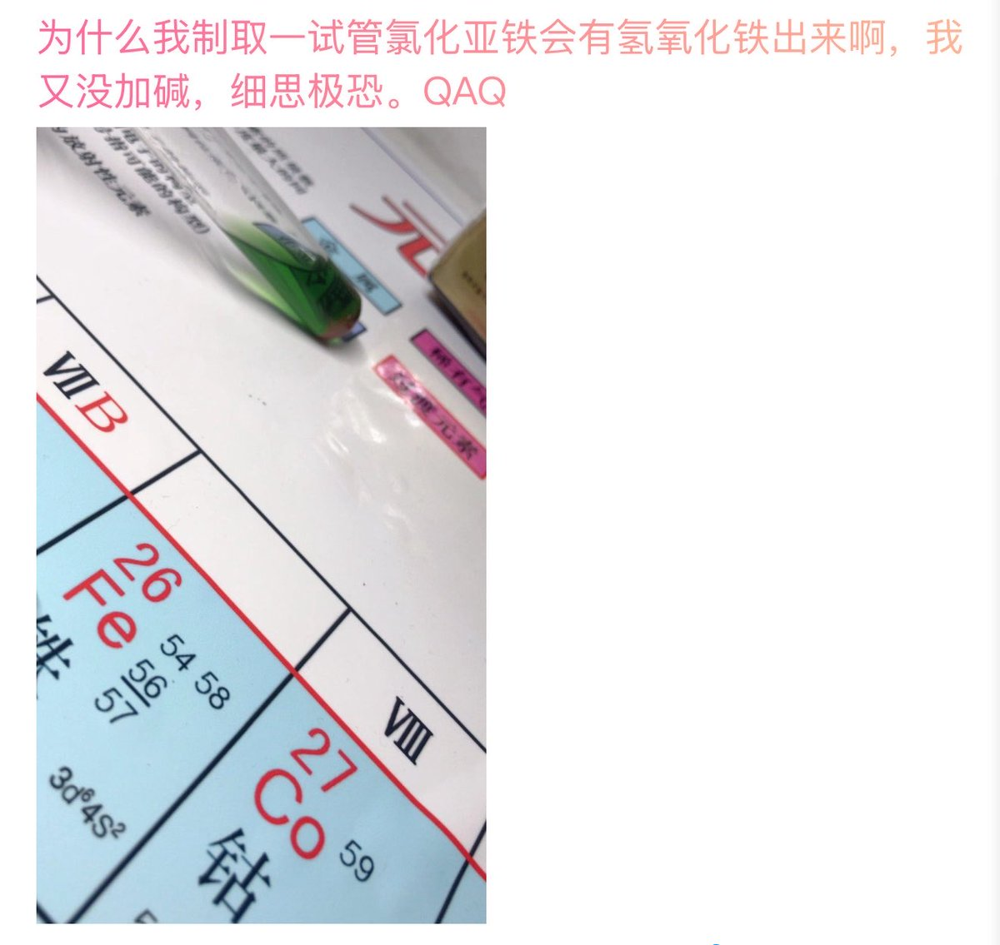

后来中考当然没有考的特别好，高考的时候其他科的成绩也平平。我从学生时代的化学成绩固然好，但是挑不起标化考试的大梁。那时候我以为能让我继续把这份热爱维持下去的，是每一个化学原理，每一个化学实验现象。但现在回过头想想，我爱化学，其实很大一部分原因是因为我遇到的化学老师们真的都很好🥹


你知道吗，P1离现在已经过去八年多了
我是一个极致三分钟热度的人 这个词伴随了我的成长 我学过很多技能 培养过很多爱好 最后能陪我快十年的只有对化学的热爱
想起来小升初的时候看到初中课本里的电解水感觉好神奇，那会觉得化学好好玩，于是因为早年因为兴趣驱动对化学的“恋爱脑”导致了初中的极度偏科 https://t.co/HyzG9g6uvH https://t.co/wCET6ZVNAE
我是一个极致三分钟热度的人 这个词伴随了我的成长 我学过很多技能 培养过很多爱好 最后能陪我快十年的只有对化学的热爱
想起来小升初的时候看到初中课本里的电解水感觉好神奇，那会觉得化学好好玩，于是因为早年因为兴趣驱动对化学的“恋爱脑”导致了初中的极度偏科 https://t.co/HyzG9g6uvH https://t.co/wCET6ZVNAE